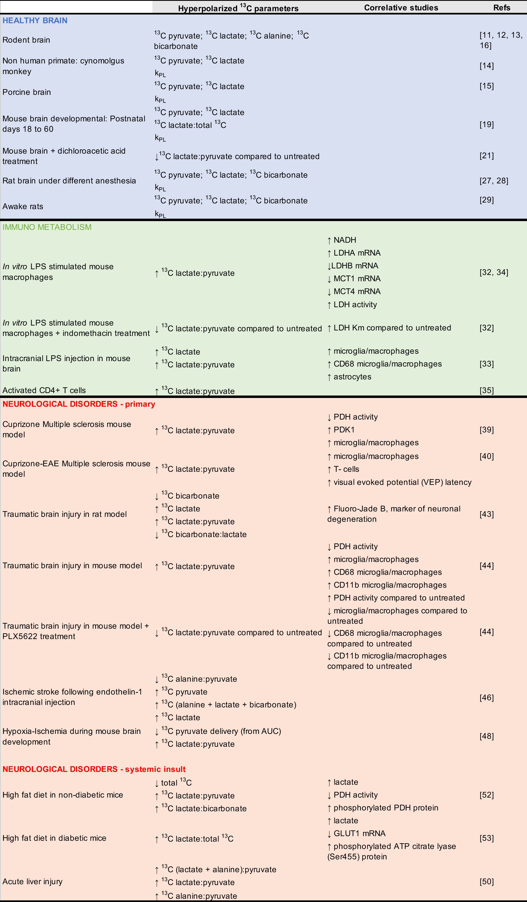
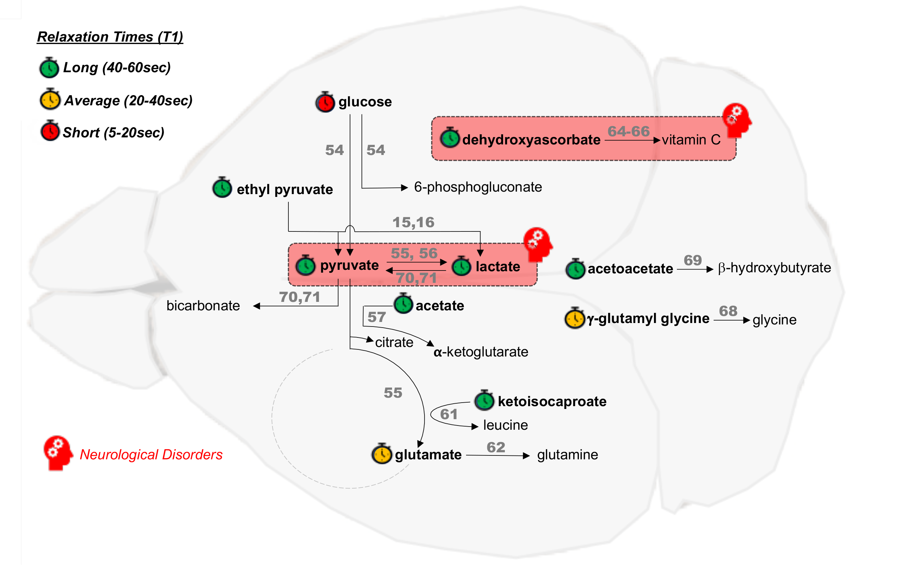
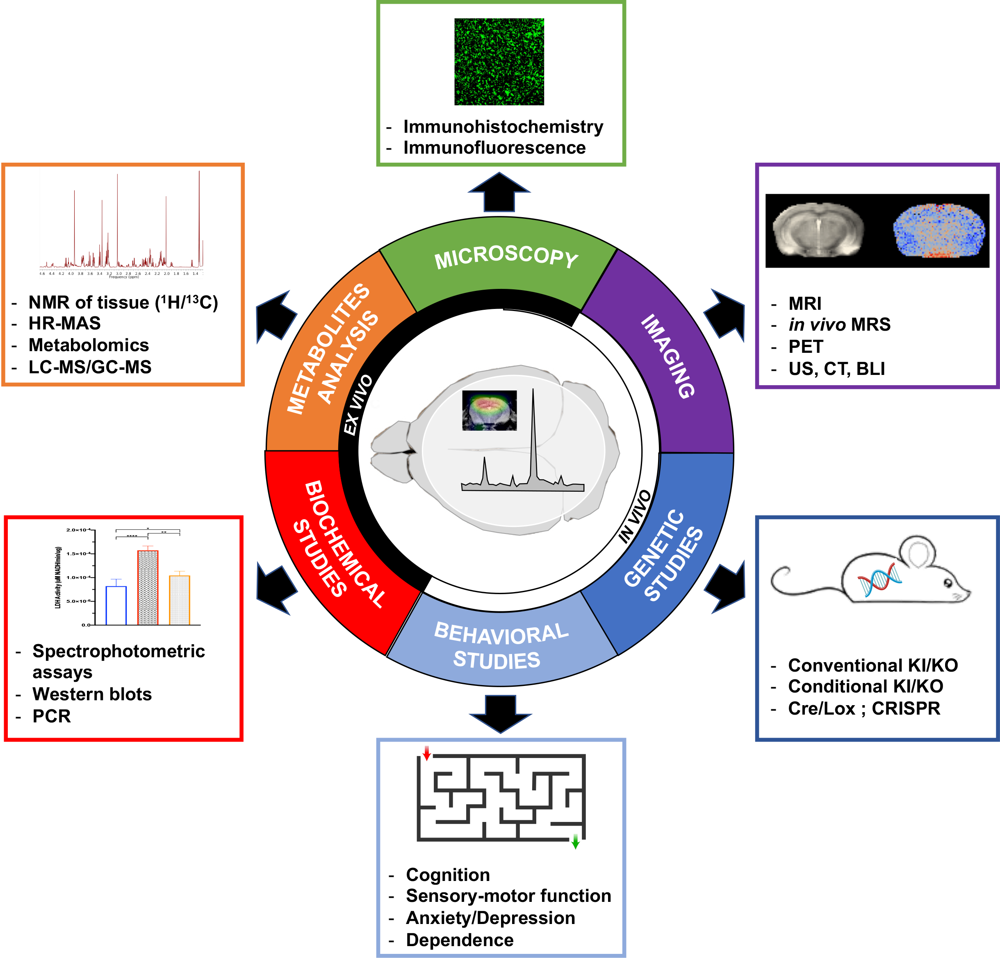

Neurological applications of hyperpolarized ^13^C MR#
By Myriam M. Chaumeil, PhD ^1,2^
^1^Department of Physical Therapy and Rehabilitation Science, University of California, San Francisco
^2^Department of Radiology and Biomedical Imaging, University of California, San Francisco
Abstract
Metabolic imaging based on hyperpolarized ^13^C technology gives unprecedented information of previously inaccessible metabolic pathways and does so non-invasively and in real time. Applied to the field of oncology for more than a decade, this approach has only recently emerged as a methodology of high interest to study the brain in health and disease. Hyperpolarized ^13^C metabolic imaging can potentially be used to not only ameliorate our understanding of brain metabolism and associated function, but also to provide new imaging readouts that could improve diagnosis, prognosis and longitudinal monitoring of treatment response in neurological disorders. In this chapter, we will first discuss the use of HP [1-^13^C]pyruvate in preclinical models of health and disease, and the promise of such approaches. We will then review which other HP agents could be used in the context of the brain, and their respective potential. Finally, we will examine the role of correlative experiments in complementing and strengthening metabolic imaging approaches in preclinical models.
Keywords
Brain, metabolism, hyperpolarized 13C, metabolic imaging, neurological disorders.
I. Introduction: an overview of the brain and its metabolism
The brain is a complex and fascinating structure, made of two main types of cells: neurons and glia. Glia are themselves divided in three subtypes: astroglia (or astrocytes), oligoglia (or oligodendrocytes) and microglia. Neurons are highly specialized cells designed to transmit information to other nerve cells, muscle, or gland cells. On the other hand, glia are non-neuronal cells that do not produce electrical impulses, but maintain homeostasis, form myelin, and provide support and protection for neurons.
The number of neurons is extremely variable between species: the common fruit fly has about 100,000 neurons, whereas it is estimated that the human brain has about 10^14^ (100 billion) neurons. As for glial cells, their number has always remained a question. In the human brain, for more than a century, they were thought to outnumber neurons by a factor of 10:1 to 50:1, but recent studies using isotropic fractionator have demonstrated that the ratio of glial cells to neurons is more likely to be 1:1 [1]. Another recent study has shown that the rat brain contains ∼330 million cells, of which 200 million are neurons (70% of which are in the cerebellum), challenging the assumption that glial cells were the majority type in this specie [2].
While making up only ~2% of our total body mass, the human brain receives up to 15% of total blood flow, consuming up to 20% of oxygen and 25% of circulating glucose under normal conditions [3]. It is estimated that neurons consume 75%-80% of the energy produced in the brain [4]. Neurons rely mostly on glucose as an energy source, but alternative fuels can be used in times of modified energetic needs, such as ketone bodies during brain development and in prolonged fasting periods [5, 6] or lactate during intense physical activity [7]. Brain metabolism involves complex intercellular trafficking of metabolites and compartmentalization of numerous processes. Energetic supply and demand are tightly coupled in response to neuronal activity (i.e. neurovascular and neurometabolic coupling) [8], and regulated by cerebral blood flow and transport through the blood–brain barrier (BBB). In response to perturbation and trauma, brain energy metabolism adapts, and impaired energy metabolism has been implicated in most neurodegenerative disorders [9]. This impairment is likely multifactorial, and probably originate from several – if not all – brain cell types. Furthermore, when cerebral immune response occurs, the relative number of brain cell types is modified. Microglia, the resident macrophages of the brain, become activated and increase in numbers. Peripheral immune cells, such as macrophages and T-cells, can also infiltrate the brain parenchyma, and additional cell impairment such as astrogliosis, oligodendrogliosis and neuronal death can also occur.
The application of HP ^13^C metabolic imaging to the study of the brain, in health and disease, has been expanding over the past five years. Because the brain is a highly metabolic organ and because metabolic impairment plays a central role in most brain diseases, the potential of HP ^13^C MRS/I as a valuable imaging method capable of providing an unprecedented picture of brain metabolism is increasingly being recognized. HP ^13^C MRS/I can potentially be used to not only improve our understanding of brain metabolism in health and disease, but also to provide new imaging readouts that could improve diagnosis, prognosis and longitudinal monitoring of treatment response.
In this chapter, we will first describe the neurological applications of ^13^C MRS/I of HP [1-^13^C]pyruvate in preclinical models of health and disease and discuss the potential of such approaches. We will then review which additional HP probes have been applied to the study of the healthy brain. Finally, we will discuss which correlative studies can be performed in complement of HP ^13^C MRS/I, to validate MR results and improve our understanding of this metabolic imaging approach.
II. Neurological applications of HP [1-^13^C]pyruvate
To date, few studies have used HP ^13^C MRS/I to assess metabolism in vivo in preclinical healthy brains and preclinical models of non-cancer neurological disorders. The majority of these studies used HP [1-^13^C]pyruvate, and are summarized in Table 1 (adapted from [10]), which describes the HP ^13^C parameters obtained following injection of HP [1-^13^C]pyruvate, and the associated molecular and histological correlative studies performed.

Table 1 Preclinical studies of the brain, in health and disease, using HP [1-^13^C]pyruvate**. HP ^13^C parameters obtained following injection of HP [1-^13^C]pyruvate in preclinical studies with associated molecular and histological correlates. Adapted from reference [10].
II.1. Healthy brain
II.1.1. Adult
Applications of HP [1-^13^C]pyruvate to the studies of the adult healthy brain are of fundamental importance, both in preclinical studies and when thinking of clinical translation. Human imaging studies are highly feasible, as demonstrated by the multiple clinical oncological studies that have been performed to date or are currently underway (see Chapter 5). Interestingly, two studies have now applied by^13^C MRS/I of HP [1-^13^C]pyruvate to the study of healthy volunteers, showing initial feasibility and reproducibility of metabolic topography [11, 12]. Such MR datasets can help assess what cerebral metabolism as measured by HP ^13^C MRS/I is at “baseline” (i.e. in healthy conditions), which would subsequently improve our understanding on how cerebral metabolism is affected by neurological diseases, therapies, maturation/aging processes or peripheral perturbations such as diet. So far, HP [1-^13^C]pyruvate has only been applied to the study of the healthy brain in a few preclinical studies, and more investigations are clearly needed. When injected into adult rodents (mice and rats), cerebral conversion of HP [1-^13^C]pyruvate to HP [1-^13^C]lactate, HP [1-^13^C]bicarbonate and HP [1-^13^C]alanine has been detected in several studies conducted at clinical field strength (1 Tesla or 3 Tesla) using preclinical polarizers [13-15]. One study investigated HP [1-^13^C]pyruvate metabolism in the non-human primate brain at 3 Tesla using the clinical SpinLab polarizer, and found that HP ^13^C lactate-to-pyruvate ratios measured in the primate brain were similar to the ones measured in rodent brains [16]. This study paved the way for the first clinical trial using HP [1-^13^C]pyruvate conducted at UCSF. It is important to note that, whereas cerebral HP [1-^13^C]lactate production is seen in all these studies, detection of HP [1-^13^C]bicarbonate and HP [1-^13^C]alanine is not universally reported, as it still remains a challenge and requires dedicated sequences and/or hardware. Furthermore, it is still unknown if HP [1-^13^C]alanine is actually produced by transamination of HP [1-^13^C]pyruvate in cerebral tissue, or if the signal only arises from surrounding muscles. The relative contribution of each cell type to the detected HP signal in healthy brain is also still undetermined. Finally, an important area of investigation is the question of transport of HP [1-^13^C]pyruvate across the BBB. A recent study demonstrated that such transport is rate-limiting in anaesthetized animals, and that chemically-driven BBB opening results in a dramatic 90-fold increase in pyruvate transport and conversion to lactate in the porcine brain [17]. As a more clinically translatable alternative to chemical opening of the BBB, the same authors also used HP ethyl-[1-^13^C]pyruvate, a more lipophilic probe able to readily cross the BBB, which was first used in the rat brain and showed a comparable lactate level to that observed following [1-^13^C]pyruvate injection [18]. Post HP ethyl-[1-^13^C]pyruvate injection, the signals of HP [1-^13^C]pyruvate and [1-^13^C]lactate were detected in brain using a dedicated sequence [17]. This approach is highly promising, but the presence of multiple spectral resonances renders the sequence design challenging.
II.1.2. Effects of age and sex
It is well-known that both early maturation and aging processes affect brain metabolism, and relative cell populations [19, 20]. However, very few studies to date have addressed the influence of these physiological processes on HP metabolic imaging data. To date, only one HP study has investigated the effect of early brain development on imaging parameters. In this longitudinal study conducted in mice, cerebral conversion of HP [1-^13^C]pyruvate to HP [1-^13^C]lactate was measured on a 14 Tesla MR system, and shown to decrease with age between postnatal days (P) P18 and 60 [21]. Total brain volume as measured by conventional MRI, however, remained unchanged, demonstrating the added value of metabolic imaging (cf. section IV on correlative studies). In the healthy aging brain, only one study has been performed to date, on 9-month-old mice, which is equivalent to ~45 human years [22]. This study showed that treatment with dichloroacetate (DCA), a pyruvate dehydrogenase kinase (PDK) inhibitor, decreased cerebral HP [1-^13^C]pyruvate to HP [1-^13^C]lactate conversion, and caused an impairment in spatial learning as measured using a Morris water maze [23]. More studies are definitely needed in order to better understand both healthy aging, as well as aging-related diseases such as Alzheimer’s disease (AD).
In addition to age, it would be extremely interesting to assess the influence of sex on the HP ^13^C data. Only one HP study has addressed this to date, in kidneys. In this report, the authors show 56±11% lower lactate production per mL/100 mL/min in female rats than in age-matched male rat kidneys, as measured by HP ^13^C MR and dynamic contrast enhanced (DCE) MRI [24]. Importantly, these results were largely independent of the pyruvate volume and the difference in body weight. So far, no study has investigated such effect in the brain, even though assessment of sex differences is now mandated in all NIH-funded studies and a large body of literature suggests that sex differences in metabolism exists in the healthy brain. For example, in a recent retrospective study, a machine learning algorithm was applied to a multiparametric brain positron emission tomography (PET) imaging dataset acquired in a cohort of 20- to 82-year-old, cognitively normal adults (n = 205) to define their metabolic brain age. The authors found that that throughout the adult life span the female brain has a persistently lower metabolic brain age - relative to their chronological age - compared with the male brain [25]. Female and male brains are also known to react differently in disease (e.g. prevalence of AD is higher in female [26]), or in response to an external insult. As an interesting example, a recent study funded by the National Aeronautics and Space Administration (NASA) showed that exposure to galactic cosmic radiation (GCR) induces long-term cognitive and behavioral deficits in male mice, but not in their female counterparts, suggesting differential response mechanism to radiation [27]. Altogether, these results indicate that sex differences need to be considered when performing preclinical (and potentially clinical) HP metabolic imaging of the brain, as well as other organs.
II.1.3. Effects of anesthesia
Almost all preclinical studies using HP ^13^C MR imaging have been conducted on animals under anesthesia, which is known to alter hemodynamics, metabolism and neuroprotection [28]. One study investigated the effect of different anesthesia regimen on the metabolism of HP [1-^13^C]pyruvate and [2-^13^C]pyruvate in the rat brain in vivo, and found that the apparent metabolic rate from pyruvate to lactate modeled was significantly greater for isoflurane than for all other anesthetic conditions, whereas the conversion of pyruvate to bicarbonate was significantly greater for morphine than for all other anesthetic conditions [29]. In another study performed in the rat brain, the level of HP [1-^13^C]pyruvate increased with increased isoflurane levels, likely due to vasodilation, whereas lactate and bicarbonate levels were unchanged by depth of anesthesia [30]. When performing any preclinical experiment, one must keep in mind the effect of anesthetics and ensure reproducibility in type and depth of anesthesia between subjects for proper interpretation of the HP ^13^C imaging data.
In order to circumvent the effect of anesthesia, one recent study investigated the potential of performing HP ^13^C metabolic imaging of the brain in awake animals [31]. This study shows that HP bicarbonate-to-total ^13^C and HP lactate-to-total ^13^C ratios and corresponding exchange rates decreased from awake animals to urethane to isoflurane anesthetized animals. Although this study demonstrates feasibility and increases relevance to human studies, imaging awake animals require extensive training, and stress might be a confounding factor modulating metabolism.
II.2. Neurological disorders
II.2.1. Cell studies of immunometabolism
Over the past decade, immunometabolism has become one of the most exciting areas of translational research [32]. By definition, immunometabolism refers to the metabolic processes regulating immune cell responses in healthy conditions and in disease states. In the brain, immune response and associated immunometabolic impairment are central to many neurological disorders. Understanding the HP metabolic signature of immune cells ex vivo is thus crucial to improve our understanding of in vivo datasets. Upon activation, mononuclear phagocytes (MPs), namely microglia and macrophages, have been shown to undergo metabolic reprogramming. This reprogramming is complex and differs between activation subtypes (proinflammatory vs. neuroprotective, M1/M2 paradigm) [33]. A study conducted on classically activated pro-inflammatory macrophages using HP [1-^13^C]pyruvate at 11.7 Tesla showed that, after M1 activation using the toxin lipopolysaccharide (LPS), HP ^13^C lactate/pyruvate ratio was significantly increased compared to non-activated macrophages [34]. Correlative studies further showed that this increased ratio was linked to increased lactate dehydrogenase (LDH) activity and gene expression, increased levels of cofactor nicotinamide adenine dinucleotide (NADH), and decreased expression of monocarboxylate transporters 1 and 4 (MCT1/4), resulting in an increased intracellular lactate concentration. When macrophages were treated with indomethacin, a non-steroidal anti-inflammatory drug, HP ^13^C lactate/pyruvate ratio were decreased, demonstrating the potential of metabolic imaging to monitor the response to immunomodulatory therapies. In line with these findings, intracranial injection of LPS in mice resulted in increased HP ^13^C lactate-to-pyruvate at the site of injection [35], which was associated with increased numbers of microglia/macrophages and astrocytes. Another recent study conducted at lower field strength (1.47 Tesla) not only confirmed that HP ^13^C lactate/pyruvate ratio were increased in activated M1 macrophages, but furthermore showed that conversion of HP [1-^13^C]dehydroascorbic acid (DHA) to HP [1-^13^C]ascorbic acid (AA) was also significantly increased upon M1 activation, likely reflecting modulations in reactive oxygen species (ROS) production [36].
In addition to MPs, cells of the adaptive immune response have also been investigated by HP ^13^C MRS. In activated CD4+ T-cells derived from human donors, HP ^13^C lactate/pyruvate ratio were increased three-fold compared to non-activated lymphocytes [37].
II.2.2. Primary brain diseases
a. Multiple sclerosis
Multiple sclerosis (MS) is a multifaceted disease of the central nervous system and one of the most common causes of disability in young adults [38]. The major hallmark of MS is an uncontrolled immune response that drives cortical and white-matter demyelination, resulting in continuously worsening cognitive and physical impairments. A recent study estimated MS prevalence at nearly 1 million adults in the United States, more than twice the previously reported number [39]. To date, the clinical standard of imaging for MS patients is MRI, but chronic and/or cortical lesions remain hard to detect despite the development of advanced sequences [40]. Given the importance of inflammation in all MS lesions, new non-ionizing imaging methods providing insights on inflammatory processes would improve patient management and treatment. To date, two preclinical studies have applied HP ^13^C MRS/I to the study of MS [41, 42]. In the cuprizone-induced MS model, increased HP ^13^C lactate-to-pyruvate ratios were measured in demyelinated white matter lesions, where high levels of macrophages were also detected. Correlatives studies demonstrated that these macrophages upregulated PDK1, leading to regional inhibition of PDH activity, thus preventing pyruvate entrance into the tricarboxylic acid (TCA) cycle and increasing flux towards lactate production. Interestingly, LDH activity was not increased in the lesions, and no other cell types besides macrophages was found to upregulate PDK1. An additional correlative study was performed in CX3CR1 knock-out (KO) mice, which do not elicit immune response following cuprizone administration due to their lack of the fractalkine receptor. In these transgenic mice, no increased level of macrophages/microglia was detected, and HP ^13^C lactate-to-pyruvate ratios were not increased. Altogether, these correlative studies argue in favor of macrophages/microglia being the main cell type responsible for increased HP ^13^C lactate-to-pyruvate ratios. In the second MS study, HP ^13^C MRSI of pyruvate and urea was applied to new MS model that elicits both innate (MPs) and adaptive (T-cells) immune response (cuprizone-EAE model). HP ^13^C lactate production was increased in CPZ/EAE mice, in agreement with increased levels of microglia/macrophages and T-cells. Correlative studies were also conducted using conventional MRI (T~2~-weighted and T~1~-weighted post Gadolinium), clinical evaluation of disease severity, evaluation of visual pathway conduction using visual evoked potential (VEP), and immunofluorescence (IF) analyses, in order to further understand the value of the metabolic imaging data.
b. Traumatic brain injury
Complex alterations in brain structural integrity, perfusion and metabolism arise after traumatic brain injury (TBI) [43]. Imaging methods allowing for metabolic evaluation of TBI status and progression are lacking, limiting our understanding of TBI pathogenesis [44]. To date, only two preclinical studies have tested the potential of HP ^13^C MRS/I to improve detection/monitoring of TBI progression. In a rat model of controlled cortical impact (CCI) TBI, HP ^13^C lactate-to-pyruvate ratio was increased and bicarbonate-to-lactate ratio was decreased at 4 hours post injury, revealing significant metabolic impairment following TBI, in line with previously reported decrease of PDH activity [45]. In a mouse model of CCI, investigation of further timepoints following injury showed HP [1-^13^C]lactate-to-pyruvate ratios were also increased at 12 hours, 24 hours, and 7 days post-injury, and remained elevated up to 28 days following impact. Correlative studies were performed to confirm that these changes were linked to decrease of PDH activity with no changes to LDH activity [46]. Furthermore, in mice which received a diet that specifically depletes the microglial population, the HP ^13^C lactate-to-pyruvate ratios was not increased at 7 days post-injury, suggesting that the major cell type contributing to the increased ^13^C lactate-to-pyruvate was microglia. It is of course very likely that other factors, including neuronal death and BBB disruption, contribute to changes in HP substrate delivery and HP metabolism.
c. Stroke and ischemia
Stroke is the third leading cause of death worldwide and the leading cause of disability among adults. In total, 80% of strokes are ischemic, when occlusion of a cerebral artery deprives the tissue of metabolic substrates and oxygen. Neuroimaging techniques that can rapidly assess the penumbra are essential to guide treatment decisions and develop new therapies [47]. One study to date has applied the HP ^13^C technology to stroke. In a model of ischemic stroke induced by intracranial injections of the vasoconstrictor endothelin-1, the levels of HP [1-^13^C]pyruvate and HP [1-^13^C]lactate were increased in the penumbra compared to the contralateral brain, but the HP ^13^C lactate-to-pyruvate ratio was not different between hemispheres [48]. The authors suggest that these findings indicate an increased delivery of HP [1-^13^C]pyruvate, possibly linked to increased perfusion or uptake across the BBB, as well as an increased conversion into lactate suggesting increased LDH enzymatic activity. However, no ex vivo correlative studies were performed to confirm these hypotheses.
Hypoxia-ischemia (HI) is an important cause of neonatal mortality and morbidity [49]. Cerebral metabolic failure has been broadly recognized as the one of the main initiating events resulting in cell death and HI progression, suggesting a high potential for HP ^13^C MR in the longitudinal assessment of HI. In a recent study, mice that underwent unilateral hypoxia-ischemia (HI) on P10 were imaged on a 14.1 Tesla scanner at days P10 (infant), P17 (early childhood), and P31 (adolescence) using dynamic HP ^13^C MRSI [50]. The authors found a significant reduction in pyruvate delivery (as estimated by area under pyruvate curve) and a higher HP ^13^C lactate-to-pyruvate ratio in the ipsilateral (HI) hemisphere at P10, and these differences decreased at P17 and disappeared at P31, suggesting a role for HP metabolic imaging for longitudinal monitoring of HI progression.
II. 2.3. Peripheral insults affecting brain metabolism
a. Acute liver failure
Intracranial hypertension linked to cerebral edema is a severe complication of acute liver failure (ALF). The pathogenesis of cerebral edema in ALF is unclear but thought to be related to brain metabolic impairment, especially involving lactate [51]. In this context, a study investigated the metabolic effect of ALF in the brain of a rat model of hepatic artery ligation using ^13^C MRSI of HP [1-^13^C]pyruvate at 7 Tesla [52]. Following ALF, increased brain HP ^13^C lactate-to-pyruvate and HP ^13^C alanine-to-pyruvate ratios were detectable at very early stages (6 h post hepatic artery ligation), before animals presented any changes in behavior. Although no ex vivo correlative studies were conducted, the authors concluded that the early detection of the de novo synthesis of lactate using HP ^13^C MRSI suggests an important role for brain lactate in the physiopathology of ALF.
b. Diet and diabetes
High intake of saturated fatty acids through diet has been linked to an increase risk of developing AD and dementia [53]. The mechanisms behind such increased risk are not fully understood, but several studies indicate a role for neuroinflammation and metabolic impairment. In this context, the potential of HP ^13^C MRSI to monitor cerebral impairment was tested in a mouse model of high fat diet (HFD) at 9.4 Tesla [54]. In mice fed 60% HFD for 6 months, HP [1-^13^C]pyruvate MR spectroscopy showed decreased perfusion (as estimated by total ^13^C signal) and increased conversion from HP [1-^13^C]pyruvate to lactate in the brain, with highest conversion rates in the hippocampus and striatum. Dynamic contrast-enhanced MR imaging showed no differences between control and HFD mice, suggesting that the BBB was unaffected by the diet. Importantly, several correlative studies were performed and showed that the increase in HP ^13^C lactate-to-pyruvate ratio was associated with increased lactate levels and decreased PDH activity, whereas LDH activity was unchanged. Furthermore, the authors found a significant correlation between HP ^13^C lactate-to-pyruvate ratio and cognitive deficits as evaluated by a Morris Water Maze test, at 6 months of HFD. Finally, the authors showed that, in mice fed HFD for 3 months, no cognitive decline was detected, but HP [1-^13^C]pyruvate MRSI showed increased lactate conversion and no difference in cerebral perfusion. Altogether, this complex study demonstrates a high potential of HP ^13^C MRSI to assess longitudinal changes in metabolism linked to diet.
The authors then performed a follow up study examining the metabolic effect of HFD in the streptozotocin mouse model of diabetes [55]. After 6 months of HFD, unlike in the previous study, conversion of pyruvate to lactate did not differ from control, but the ratio of [1-^13^C]lactate to total ^13^C showed an almost 1.4-fold increase in the hippocampus. In that region, significantly decreased GLUT1 mRNA levels and increased lactate were detected, suggesting impairment in both glucose and pyruvate metabolism. Furthermore, the active form of ATP citrate lyase (ACLY), the enzyme that cleaves citrate into oxaloacetate and acetyl CoA, was increased in both hippocampus and cortex samples of HFD diabetic mice, highlighting a further metabolic adaptation in this model.
III. New HP probes for brain applications
HP [1-^13^C]pyruvate is by far the most commonly used probe, as described in Section I above and in other chapters, mostly due to the fact that this imaging agent combines both great technical and great biological properties. However, one could say that HP [1-^13^C]pyruvate is for HP ^13^C MRS what ^18^F-fluorodeoxyglucose (FDG) is for PET imaging: a very versatile imaging agent, applicable and valuable in many organs and diseases, but with limitations in terms of specificity. Much like in the PET field where new radiotracers are constantly tested, in the field of HP ^13^C MRS, new HP probes are being developed and evaluated at a fast pace (see Chapter 6). Such probes are designed to enable assessment of new metabolic pathways that are of importance in specific pathogenic processes. Because of the central role of metabolic impairment in neurological disorders, several new HP probes present a high potential. However, to date, such probes have only been evaluated in healthy animal brains (Figure 1), except HP [1-^13^C]lactate (cf. paragraph III.3). Future studies are critically needed to establish their values for monitoring and assessing therapeutic response in brain diseases.

Figure 1: Overview of cerebral metabolic reactions investigated using HP probes. HP probes (bold) and corresponding HP downstream product(s) currently investigated in preclinical studies of the healthy brain and neurological disorders (red boxes). References to the corresponding study/studies are noted in square brackets above the reaction arrows [29–32,35,36,40–47]. The relaxation times (T1) of the HP probes are ranked as long (40–60 s, green), average (20–40 s, orange) and short (5–20 s, red), from data at the clinical magnetic field strength of 3 Tesla (extrapolated rom data at other field strengths for glucose, glutamate, acetate and ketoisocaproate). Adapted from reference [10].
III.1. Energy metabolism
a- Glycolysis
The ability to measure the in vivo metabolic flux from glucose all the way through glycolysis in a reasonable timeframe would be extremely valuable in the evaluation and monitoring of many diseases, including neurological disorders. Following injection of HP ^13^C-labeled glucose, which had been deuterated to increase its relaxation time T1 (HP [2,3,4,6,6-^2^H~5~, 3,4-^13^C~2~]glucose), detection of the end product of glycolysis HP [1-^13^C]lactate has been shown feasible in the healthy mouse brain at 9.4 Tesla [56]. Although the T1 of deuterated glucose remained short at this field strength (~12s at 9.4 Tesla), this approach could potentially complement FDG-PET, informing on glucose metabolism rather than uptake.
b- TCA cycle
Unlike HP [1-^13^C]pyruvate, for which the ^13^C label gets into bicarbonate through decarboxylation by PDH and never enters the TCA cycle, HP [2-^13^C]pyruvate is an interesting probe that allows investigating not only the anaerobic pyruvate to lactate conversion, but also provides information on the aerobic metabolism through the TCA cycle. In the case of HP [2-^13^C]pyruvate, the ^13^C label enters the TCA cycle through acetyl-coA labeling and is retained for many subsequent metabolic steps. In a study using a single-time-point chemical shift imaging sequence at 3 Tesla, the authors show that, in the in vivo rat brain, the resonances of HP [2-^13^C]lactate, HP [5-^13^C]glutamate, HP [1-^13^C]acetylcarnitine, and HP [1-^13^C]citrate could be detected post injection of HP [2-^13^C]pyruvate [57]. HP [5-^13^C]glutamate, HP [2-^13^C]lactate and HP [1-^13^C]citrate appeared to originate from the brain parenchyma, whereas HP [1-^13^C]acetylcarnitine was higher in peripheral tissue (e.g. muscles). However, in an another study conducted in the rat brain at 9.4 Tesla, only HP [2-^13^C]lactate could be detected in the brain tissue following HP [2-^13^C]pyruvate injection [58]. Such results suggest that detection of TCA cycle intermediates using this method remains technically challenging, likely due to low sensitivity especially at high field strength. Interestingly however, a recent study successfully demonstrated the feasibility of applying HP [2-^13^C]pyruvate to the study of the healthy human brain at 3 Tesla, thus suggesting a high potential for this probe at clinical field strength, even with low spatial resolution [59].
In addition to HP [2-^13^C]pyruvate, HP [1-^13^C]acetate has also been evaluated, as acetate is one of the main fuel source for astrocytes and readily crosses the BBB. Following injection of HP [1-^13^C]acetate in vivo, the TCA cycle intermediate HP [1-^13^C]α-ketoglutarate (also known as 2-oxoglutarate) was observed in the rat brain at 9.4Tesla [60]. Because HP [1-^13^C]α-ketoglutarate and HP [1-^13^C]acetate resonances are only <0.1ppm apart, infusion of [1,2-^13^C~2~]acetate and after carbon–carbon polarization transfer experiments were performed to confirm assignment of the α-ketoglutarate resonance.
Such metabolic information on TCA cycle metabolites provided by HP [1-^13^C]acetate or HP [2-^13^C]pyruvate is crucial, and would be of high importance for monitoring the progression of the large number of neurological disorders in which mitochondrial metabolism is affected, such as Parkinson’s disease, Huntington’s disease or Alzheimer’s disease [61].
c- Glutamine/glutamate metabolism and nitrogen homeostasis
The branched chain amino acid transaminases (BCAT) play an important role in glutamate/glutamine metabolism and nitrogen homeostasis in the brain [62]. BCAT catalyzes the transfer of an α-amino group from a branched chain amino acid (BCAA) to α-ketoglutarate, yielding glutamate and the respective branched chain α-keto acid (BCKA). BCAAs, particularly leucine, are efficiently transported across the BBB by monocarboxylate transporters (MCTs). In astroglia, leucine is converted to 2-ketoisocaproate (KIC), and the coupled reaction transfers an amino group to α-ketoglutarate to yield glutamate, which is subsequently converted into glutamine. Glutamine and KIC are then released in the extracellular space and taken up by neurons. In neurons, glutamine is converted to glutamate, and KIC regenerated to leucine, consuming glutamate in the process. Leucine is then released to the extracellular space, from which it again can be used by astroglia to yield glutamate. This nitrogen shuttling linked to the glutamate/glutamine cycle is central to the healthy brain, and is often impaired in neurological disorders, including in tau-dependent neurodegeneration [63].
To date, only two studies have investigated the potential of HP ^13^C MRS to assess such cycles. In a first study, following intravenous injection of HP 2-keto[1-^13^C]isocaproate (KIC), HP [1-^13^C]leucine was detected 20 seconds after end of injection throughout the healthy rat brain at 4.7 Tesla [64]. Interestingly, significantly higher conversion was observed in hippocampal regions compared to muscle tissue, suggesting that HP KIC might be a promising substrate for evaluation of cerebral BCAT activity in conjunction with neurodegenerative diseases. In a second study, HP [1-^13^C]glutamate was injected in healthy rats and cerebral conversion of HP [1-^13^C]glutamate to HP [1-^13^C]glutamine was observed at 3 Tesla [65]. However, in that study, a temporary BBB disruption using mannitol was performed to allow for HP [1-^13^C]glutamate to reach the brain. Despite its potential value in studying chronic excitotoxicity, such method might lead to unwanted adverse effects, and is thus limited for clinical translation.
III.2. Oxidative stress
Oxidative stress results from an imbalance between free radicals and antioxidants, which subsequently leads to cell and tissue damage. Because of its high oxygen consumption and lipid-rich content, the brain is highly susceptible to oxidative stress, and this process has been shown to be involved in many neurodegenerative disorders such as Alzheimer’s disease, Huntington’s disease, and Parkinson’s disease, but also in neuropsychiatric disorders, including anxiety disorders and depression [66]. Non-invasive in vivo measurement of oxidative stress levels would be incredibly valuable in many pathologies.
HP [1-^13^C]dehydroascorbate (DHA) has been shown to enable detection of oxidative stress in several preclinical studies [67, 68]. In the brain, DHA is transported through the BBB via GLUT1 transporters, and thus represents a probe of high potential. One study has shown that production of HP [1-^13^C]vitamin C from HP [1-^13^C]DHA could be detected in the rat brain at 3 Tesla, and that this conversion was significantly reduced when glutathione, the main antioxidant of the brain, was depleted by treatment with diethyl malate [69]. Unfortunately, administration of this HP probe causes many adverse effects in animal models [70], limiting its potential for clinical translation. An additional probe, HP γ-glutamyl-[1-^13^C]glycine, has recently been shown to be metabolized to HP [1-^13^C]glycine in the healthy rat brain at 3Tesla [71]. Because this conversion, which is catalyzed by γ-glutamyl-transferase, is involved in maintaining cysteine levels for glutathione production, this probe could potentially be applied to many neurological disorders involving oxidative stress. Finally, another HP metabolite, HP [1-^13^C]acetoacetate, has also showed promise in a recent study [72]. Conversion of HP [1-^13^C]acetoacetate to HP [1-^13^C]beta-hydroxybutyrate was detected in the mouse brain at 14.1Tesla, and was shown to be a marker for NAD^+^/NADH ratio. Such approach could thus potentially be used to non-invasively assess overall redox status in neurological diseases.
III. 3. The case of HP [1-^13^C]lactate: theranostic and BBB permeability agent
To date, two preclinical studies have used HP [1-^13^C]lactate as HP substrate in the brain: one used this probe to evaluate BBB permeability in the healthy mouse brain, and the other used it as a theranostic agent in a mouse model of stroke.
In the first study, HP [1-^13^C]lactate was used to evaluate the rate-limiting role of the BBB on equilibration between plasma and brain [73]. The authors showed that transport of L-lactate across the BBB can be observed post injection of HP [1-^13^C]lactate, and is limited by the BBB, which can restrict diffusion into the brain by nearly 30% at high plasma lactate concentrations. Furthermore, this study showed that HP [1-^13^C]lactate conversion to HP [1-^13^C]pyruvate and HP [^13^C]bicarbonate can be detected in the healthy mouse brain. Interestingly, the HP lactate-to-pyruvate ratio was different between mice strains (NMRI and C57BL/6) and was associated with differences in expression of LDHA (but not MCTs or LDHB). This study demonstrates the dual potential of HP [1-^13^C]lactate as a promising molecule to study brain metabolism and to evaluate BBB integrity by MR.
Because administration of L-lactate had shown to decrease lesion size and ameliorate neurological outcome in rodent stroke models and in clinical pilot studies, one study has evaluated the potential of HP [1-^13^C]L-lactate as a theranostic imaging substrate of interest for the evaluation of stroke. Using a transient middle cerebral artery occlusion (MCAO) mouse model, the authors evaluated the feasibility of measuring HP [1-^13^C]L-lactate metabolism in real-time, when this agent was administered after reperfusion at a therapeutic dose [74]. Conversion of HP [1-^13^C]L-lactate to HP [1-^13^C]pyruvate and HP [^13^C]bicarbonate was detected in this model at 9.4 Tesla. HP ^13^C pyruvate-to-lactate ratio was significantly higher at 1-hour post-reperfusion than 2-hours post-reperfusion or in sham. Furthermore, steady-state lactate concentration, as measured by ^1^H MRS, reached a maximum value between 1- and 2-hours post-reperfusion and then steadily decreased. Interestingly, levels of MCT1, MCT2 and MCT4 expression was increased in blood vessels and MCT1 and MCT4 expression was increased in living neurons, perhaps enabling more lactate to be delivered to the tissue. HP [1-^13^C]lactate could thus be potentially used as a theragnostic agent, although its delivery may be BBB limited [73].
IV. Correlation studies for HP ^13^C data
Understanding HP ^13^C metabolic imaging data is challenging, as many factors jointly influence the HP readouts that are detected, both in health and disease. Unlike non-oncological clinical investigations, using preclinical models offers the unique possibility to perform correlative and validation studies, in order to better assess the potential added value of HP ^13^C MR, and dissect the possible mechanisms driving the measured HP data. One of the main guiding principles of preclinical research on animals is the three Rs ethic rule, which stands for Replace, Reduce and Refine. Part of this rule is to reduce the number of animals used to a minimum, to obtain information from fewer animals or more information from the same number of animals. Ethically speaking, it is thus necessary and should be almost mandatory to get as much information as possible from any animal that undergoes metabolic imaging, using complementary in vivo methods and/or using the ex vivo brain tissue for further analysis. Figure 2 present a summary of correlative and validation studies that can be performed in complement to HP ^13^C metabolic imaging of the brain.

Figure 2: Correlative studies for HP ^13^C metabolic imaging of the brain. Summary of the six main categories of complementary studies that can be performed in conjunction with HP 13C metabolic imaging of the brain. The three categories that can be conducted in vivo are: Imaging, Genetic Studies of animal models and Behavioral Studies of animal models. The three categories that are performed on ex vivo brain samples post euthanasia of the animals are: Microscopy, Metabolites analysis and Biochemical Studies.
IV.1. In vivo methods
a- Non-invasive imaging approaches
Conventional imaging methods that are already used in the clinic can be performed not only to localize HP ^13^C MRSI data, but also to provide complementary knowledge to the metabolic imaging approaches. MRI is by far the most convenient imaging strategy, as it uses the same imaging system as HP ^13^C. Out of all MRI sequences, conventional T~2~-weighted MRI is the most commonly used for brain studies, as it provides the greatest contrast between cerebral substructures and grey/white matter in the rodent brain. In disease, this sequence can be used to detect structural lesions or alterations, such as cavitation in TBI models [46]. Other methods like T~1~-weighted MR imaging post injection of contrast agent (mostly Gadolinium-based) can be used to identify regions of BBB leakage (e.g. MS lesions [75]), although care should be taken to perform this kind of imaging after HP ^13^C MRS, to not interfere with the relaxation of the HP probe. Such information is of high importance when trying to understand HP data, as BBB leakage could lead to increase delivery of the HP substrate, which needs to be taken into account for data interpretation [24]. Finally, more specialized MRI methods could be performed, e.g. susceptibility weighted imaging (SWI) to detect microbleeds, or diffusion weighted imaging (DWI) to look at structural integrity for example. Using the same imaging system, in vivo ^1^H MRS can also be performed to assess the steady-state levels of cerebral metabolites. While comparison between HP ^13^C and ^1^H MRS data has been performed in the context of cancer [76], no non-oncological studies of the brain in health or disease has combined these two modalities yet.
In addition to MRI/MRS, the use of other imaging approaches, such as PET, computed tomography (CT), ultrasound (US) or bioluminescence imaging (BLI) could also be potentially valuable to complement HP data, and most of these approaches have been used in conjunction with HP ^13^C MR in oncology studies. When studying the brain, PET approaches are the most useful, and could be used to further our understanding of metabolic changes linked to pathogenesis. For example, ^18^F-FDG-PET could be used as a complement to ^13^C MRSI of HP pyruvate or HP glucose in Alzheimer’s disease, where glucose uptake has been shown to decrease early [77].
b-Genetic studies of animal models
Genetically engineered and transgenic animal models of disease are extremely useful and widely used in the context of neurological disorders [78]. Conventional or conditional knockin (KI) or knockout (KO) mice can help understand not only the added value of HP ^13^C MRSI, but also dissect the mechanisms behind the observed modulations of the HP ^13^C MR signals. In conventional KI/KO models, one or several genes are artificially impaired/eliminated (KO) or overexpressed/added (KI) in all cells and tissues in the animal body. On the other hand, conditional KI/KO models involve gene KI/KO that only target specific cells, tissues or organs at a certain time. Simply put, in conventional KI/KO, the target gene is KI/KO everywhere at all times. In conditional KI/KO, the experimenter chooses where and when the target gene is KI/KO. Many techniques can be used to generate such models, the two most common being CRISPR [79] and Cre-LoxP [80]. Both systems have their advantages and drawbacks; for example CRISPR recognizes and modifies any chosen site in the genome but does not have good temporal or tissue-specific control of the chosen genetic modification, whereas Cre-LoxP enables great temporal and tissue-specific control but needs insertion of specific sites into the genome. Regardless of the engineering system, transgenic models enable to get highly specific answers not accessible in other ways. For example, in order to further confirm that microglia were likely responsible for the increased HP lactate levels observed in a mouse model of MS, a transgenic KO model in which CX3CR1 was KO in monocytes and brain microglia was used to avert microglial activation [41]. CX3CR1 KO prevented the increase in HP lactate seen in MS mice, further strengthening the hypothesis that this increase was microglia-driven. In the context of the brain, many approaches could be tested to improve our interpretation of HP ^13^C data, such as using conditional KO of an isoform or LDH or MCT in neurons or astrocytes and assessing the effect on the detected HP signal. Further studies using such approaches are critically needed and would strengthen our understanding of the biological potential of HP ^13^C metabolic imaging.
c- Behavioral studies
Behavioral testing has been studied for a long time, as demonstrated for example by Ivan Pavlov’s early work on conditional reflexes in dogs which began at the end of the 19^th^ century [81]. Since then, behavioral testing has been extensively used in neurosciences to understand the central nervous system both in health and disease. In rodent neuroscience research, many different standardized behavior tests exist, and allow the experimenter to evaluate traits such as sensory-motor function, social interactions, anxiety-like and depressive-like behavior, substance dependence and various forms of cognitive function [82]. A few major tests and their corresponding behavioral aspects are listed below:
Open field test: Locomotor activity, anxiety and habituation
Rotarod: Motor coordination, balance, ataxia
Hindpaw footprint: Motor coordination, balance, ataxia
Morris water task: Spatial learning
Hot plate test, foot shock test, tail flick test, tail pressure test: Pain tolerance
Contextual and cued fear conditioning: Memory skills, fear levels
Dark/light avoidance; passive/active avoidance; elevated maze: Anxiety.
Importantly, the choice of behavioral testing should be done according to the disease or treatment studied, based on which brain regions are affected and which behavioral symptoms are expected. While behavioral tests are complex and require high expertise to be performed reproducibly [83], such brain-specific correlative experiments are highly interesting and informative when studying neurological disorders progression or response to treatment. To date, only one study has combined HP ^13^C MR and behavioral testing, using a Morris water maze to evaluate spatial learning in aged mice that also underwent HP ^13^C metabolic imaging [23]. This study shows that DCA treatment reduces conversion of HP pyruvate to lactate in the mouse brain and causes impairment in spatial learning. While both imaging and behavioral parameters are modulated by DCA administration, no causation or correlation were established. Future studies examining the possible correlations and causation links between behavioral metrics and imaging parameters would be of high interest. Could HP ^13^C imaging parameters be early predictor of cognitive or motor deficits? If the answer is yes, it would dramatically strengthen the added value of metabolic imaging for the study of neurological disorders.
IV.2. Ex vivo methods
After an in vivo metabolic imaging experiment end point, the brain tissue can be resected and studied using various approaches, described below, to investigate the mechanisms driving the HP data.
a- Biochemical assays
While many assays can be performed on brain tissue samples, the three most common types found in the HP ^13^C literature are spectrophotometric assays, western blots and polymerase chain reaction (PCR) assays. Spectrophotometric assays can be used to assess enzymatic activities (e.g. LDH, PDH), or levels or ratios of other molecules such as co-factors or metabolites (e.g. NAD^+^/NADH, NADH, GSH). Western blots measure protein levels, and can be applied to evaluate the levels of enzymes (e.g. LDH, PDH), as well as transporters (e.g. MCT). Finally, using PCR, mRNA levels can be evaluated, giving information of the expression levels of any molecule of interest. As shown in Table 1, such correlative studies are highly valuable to decipher the underlying modulations in HP ^13^C data seen in vivo, and should be performed as systematically as possible in preclinical studies.
b- Metabolomics
Quantitative methods allowing to assess the steady state levels of metabolites in brain tissue are crucial for validation and interpretation of in vivo HP metabolic imaging results. For example, the knowledge of the steady-state levels of the HP metabolic substrate and its product(s) is important to understand the imaging data, especially in fast equilibrium reactions for which pool sizes have an effect on the HP readout (e.g. pyruvate, see Chapter 6 for more details).
In most cases, the cerebral region or subregion of interest is processed for chemical extraction of metabolites prior to analysis. The one main exception to this statement is for the use of high-resolution magic angle spinning (HR-MAS), which requires only small amounts of unprocessed samples [84]. Chemical extraction is generally a two-step process consisting of initial quenching of the cells (to stop cellular metabolism and isolate cells) followed by extraction of the metabolites, usually using a methanol-based approach. During this process, rapid inactivation of biological activity is needed to prevent enzymatic exchange and turnover of metabolites, in order to provide an accurate picture of the metabolic state of the cell. Many extraction processes exist, and choice should be made carefully based on sample characteristics and analysis methods [85, 86].
Metabolite samples generated by chemical extraction can then be analyzed by mass spectrometry–based techniques (e.g., gas chromatography–mass spectrometry GC-MS, liquid chromatography–mass spectrometry LC-MS) and/or NMR in order to determine and quantify metabolites. Approaches include target analysis, in which a predetermined subset of metabolites is analyzed, or metabolomics/fingerprinting, in which all metabolites, identified or unknown, are quantified. Statistical and multi-variant methods (supervised or unsupervised, e.g. Principal Component Analysis (PCA)) can then be applied for information extraction and data interpretation. Such metabolomics approaches are increasingly used to probe the status of biological systems in health and disease [87]. However, to date, whereas a few brain cancer studies have combined metabolomics approaches and HP ^13^C metabolic imaging [76], no non-oncological brain study has ever done so, and future studies are critically needed.
An additional type of metabolic analysis that can be done is ex vivo ^13^C NMR of the brain that was resected post in vivo infusion or injection of a ^13^C-labeled probe. When resection is performed in a short time frame (a few minutes or less) mimicking the one of a HP ^13^C experiment, such tracing experiment can evaluate the expected fractional enrichment of substrate and products in the tissue of interest [88], and could be of high interest for evaluating the potential of new HP probes for brain studies.
c- Immunohistochemistry/Immunofluorescence
Immunohistochemistry (IHC) is a powerful tool that is widely used in neuroscience research, as it allows visualizing a target protein of interest in brain slices/sections while maintaining cellular structure [89]. This methodology can either be performed on tissue samples that have either been frozen in a cryopreservation media such as optimal cutting temperature (OCT) compound (so called IHC-F), or fixed in neutral buffered formalin and embedded in paraffin (so called IHC-P). Fluorescent IHC, also called immunofluorescence (IF), refers to the detection method which utilizes fluorescently labeled antibodies to visualize protein expression.
Many antibodies are available for staining rodent brains [90], and can be used to quantify proteins of interest. When antibodies are cell specific, IHC/IF allows to quantify brain cell types, such as neurons (e.g. NeuN), astrocytes (e.g. GFAP), or microglia/macrophages (e.g. Iba1), but can also identify cell subtypes (e.g. immature neurons using DCX or pro-inflammatory microglia/macrophages using CD68). IHC/IF can also be used to look at other important proteins, such as myelin (e.g. MBP) or transporters (e.g. MCT), specific structures such as tight junctions (e.g. ZO-I) or pathological processes such as BBB leakage (e.g. Fibrinogen) or microbleeds (e.g. Hemosiderin). When use in combination with HP ^13^C MRS/I, IHC/IF is a powerful tool to help elucidate the origin of the modulations of the HP ^13^C data, including the relative contribution of different cell types and/or the potential role of delivery/BBB leakage to the detected signal.
V. Conclusion
HP ^13^C metabolic imaging has great potential to provide unprecedented information on brain metabolism. Given the central role of metabolic impairment in neurological disorders, this technology could provide tremendous added value in comparison with other clinically available imaging technique, and likely improve diagnosis, evaluation of prognosis and assessment of therapeutic response non-invasively. While HP ^13^C metabolic imaging has been extensively evaluated in oncology, its application to non-cancer brain diseases is relatively recent, however. The literature to date is extremely promising, but further studies are critically needed to help understanding the potential and meaning of HP ^13^C data in brain diseases, in order to facilitate clinical translation of this methodology for patients with neurological disorders.
References
von Bartheld, C.S., J. Bahney, and S. Herculano-Houzel, The search for true numbers of neurons and glial cells in the human brain: A review of 150 years of cell counting. J Comp Neurol, 2016. 524(18): p. 3865-3895.
Herculano-Houzel, S. and R. Lent, Isotropic fractionator: a simple, rapid method for the quantification of total cell and neuron numbers in the brain. J Neurosci, 2005. 25(10): p. 2518-21.
Pellerin, L., Food for thought: the importance of glucose and other energy substrates for sustaining brain function under varying levels of activity. Diabetes Metab, 2010. 36 Suppl 3: p. S59-63.
Hyder, F., D.L. Rothman, and M.R. Bennett, Cortical energy demands of signaling and nonsignaling components in brain are conserved across mammalian species and activity levels. Proc Natl Acad Sci U S A, 2013. 110(9): p. 3549-54.
Nehlig, A. and A. Pereira de Vasconcelos, Glucose and ketone body utilization by the brain of neonatal rats. Prog Neurobiol, 1993. 40(2): p. 163-221.
Owen, O.E., et al., Brain metabolism during fasting. J Clin Invest, 1967. 46(10): p. 1589-95.
van Hall, G., et al., Blood lactate is an important energy source for the human brain. J Cereb Blood Flow Metab, 2009. 29(6): p. 1121-9.
Belanger, M., I. Allaman, and P.J. Magistretti, Brain energy metabolism: focus on astrocyte-neuron metabolic cooperation. Cell Metab, 2011. 14(6): p. 724-38.
Watts, M.E., R. Pocock, and C. Claudianos, Brain Energy and Oxygen Metabolism: Emerging Role in Normal Function and Disease. Front Mol Neurosci, 2018. 11: p. 216.
Le Page, L.M., et al., Imaging Brain Metabolism Using Hyperpolarized (13)C Magnetic Resonance Spectroscopy. Trends Neurosci, 2020. 43(5): p. 343-354.
Grist, J.T., et al., Quantifying normal human brain metabolism using hyperpolarized [1-(13)C]pyruvate and magnetic resonance imaging. Neuroimage, 2019. 189: p. 171-179.
Lee, C.Y., et al., Lactate topography of the human brain using hyperpolarized (13)C-MRI. Neuroimage, 2019. 204: p. 116202.
Miloushev, V.Z., et al., Hyperpolarized (13)C pyruvate mouse brain metabolism with absorptive-mode EPSI at 1T. J Magn Reson, 2017. 275: p. 120-126.
Hurd, R.E., et al., Cerebral dynamics and metabolism of hyperpolarized [1-(13)C]pyruvate using time-resolved MR spectroscopic imaging. J Cereb Blood Flow Metab, 2010. 30(10): p. 1734-41.
Mayer, D., et al., Dynamic and high-resolution metabolic imaging of hyperpolarized [1-13C]-pyruvate in the rat brain using a high-performance gradient insert. Magn Reson Med, 2011. 65(5): p. 1228-33.
Park, I., et al., Dynamic Hyperpolarized Carbon-13 MR Metabolic Imaging of Nonhuman Primate Brain. Magn Reson Med, 2014. 71(1): p. 19-25.
Miller, J.J., et al., (13)C Pyruvate Transport Across the Blood-Brain Barrier in Preclinical Hyperpolarised MRI. Sci Rep, 2018. 8(1): p. 15082.
Hurd, R.E., et al., Metabolic imaging in the anesthetized rat brain using hyperpolarized [1-13C] pyruvate and [1-13C] ethyl pyruvate. Magn Reson Med, 2010. 63(5): p. 1137-43.
Steiner, P., Brain Fuel Utilization in the Developing Brain. Ann Nutr Metab, 2020. 75 Suppl 1: p. 35-45.
Goyal, M.S., et al., Loss of Brain Aerobic Glycolysis in Normal Human Aging. Cell Metab, 2017. 26(2): p. 353-360 e3.
Chen, Y., et al., Pyruvate to lactate metabolic changes during neurodevelopment measured dynamically using hyperpolarized 13C imaging in juvenile murine brain. Dev Neurosci, 2016. 38(1): p. 34-40.
Dutta, S. and P. Sengupta, Men and mice: Relating their ages. Life Sci, 2016. 152: p. 244-8.
Harris, R.A., et al., Aerobic Glycolysis Is Required for Spatial Memory Acquisition But Not Memory Retrieval in Mice. eNeuro, 2019. 6(1).
Wen, Y., et al., Sex Differences in Kidney Function and Metabolism Assessed Using Hyperpolarized [1-(13)C]Pyruvate Interleaved Spectroscopy and Nonspecific Imaging. Tomography, 2020. 6(1): p. 5-13.
Goyal, M.S., et al., Persistent metabolic youth in the aging female brain. Proc Natl Acad Sci U S A, 2019. 116(8): p. 3251-3255.
Beam, C.R., et al., Differences Between Women and Men in Incidence Rates of Dementia and Alzheimer’s Disease. J Alzheimers Dis, 2018. 64(4): p. 1077-1083.
Krukowski, K., et al., Female mice are protected from space radiation-induced maladaptive responses. Brain Behav Immun, 2018. 74: p. 106-120.
Slupe, A.M. and J.R. Kirsch, Effects of anesthesia on cerebral blood flow, metabolism, and neuroprotection. J Cereb Blood Flow Metab, 2018. 38(12): p. 2192-2208.
Marjanska, M., et al., Brain metabolism under different anesthetic conditions using hyperpolarized [1-(13) C]pyruvate and [2-(13) C]pyruvate. NMR Biomed, 2018. 31(12): p. e4012.
Josan, S., et al., Effects of isoflurane anesthesia on hyperpolarized (13)C metabolic measurements in rat brain. Magn Reson Med, 2013. 70(4): p. 1117-24.
Hyppönen, V., et al. Metabolism of hyperpolarized [1-13C]pyruvate in awake, isoflurane and urethane anesthetized rat brain. in ISMRM. 2019. Montreal, QC, Canada.
Makowski, L., M. Chaib, and J.C. Rathmell, Immunometabolism: From basic mechanisms to translation. Immunol Rev, 2020. 295(1): p. 5-14.
Galvan-Pena, S. and L.A. O’Neill, Metabolic reprograming in macrophage polarization. Front Immunol, 2014. 5: p. 420.
Sriram, R., et al., Molecular detection of inflammation in cell models using hyperpolarized (13)C-pyruvate. Theranostics, 2018. 8(12): p. 3400-3407.
Le Page, L.M., et al., Hyperpolarized (13) C magnetic resonance spectroscopy detects toxin-induced neuroinflammation in mice. NMR Biomed, 2019. 32(11): p. e4164.
Qiao, K., et al. Non-invasive Detection of M1 Activation in Macrophages using Hyperpolarized 13C MRS of Pyruvate and DHA at 1.47 Tesla in ISMRM. 2020. Virtual.
Can, E., et al., Noninvasive rapid detection of metabolic adaptation in activated human T lymphocytes by hyperpolarized (13)C magnetic resonance. Sci Rep, 2020. 10(1): p. 200.
Reich, D.S., C.F. Lucchinetti, and P.A. Calabresi, Multiple Sclerosis. N Engl J Med, 2018. 378(2): p. 169-180.
Wallin, M.T., et al., The prevalence of MS in the United States: A population-based estimate using health claims data. Neurology, 2019. 92(10): p. e1029-e1040.
Bagnato, F., et al., Imaging Mechanisms of Disease Progression in Multiple Sclerosis: Beyond Brain Atrophy. J Neuroimaging, 2020. 30(3): p. 251-266.
Guglielmetti, C., et al., Hyperpolarized (13)C MR metabolic imaging can detect neuroinflammation in vivo in a multiple sclerosis murine model. Proc Natl Acad Sci U S A, 2017. 114(33): p. E6982-E6991.
Caroline Guglielmetti, C.C., Chloe Najac, Ari Green, Myriam Chaumeil, Metabolic imaging of brain inflammation using hyperpolarized 13C MRSI of pyruvate and urea in a mouse model of multiple sclerosis. In: Proceedings of the 27th Annual Meeting of ISMRM; Montreal, QC, Canada:0723., 2019.
Lizzo, J.M. and M. Waseem, Brain Trauma, in StatPearls. 2020: Treasure Island (FL).
Lee, A.L., Advanced Imaging of Traumatic Brain Injury. Korean J Neurotrauma, 2020. 16(1): p. 3-17.
DeVience, S.J., et al., Metabolic imaging of energy metabolism in traumatic brain injury using hyperpolarized [1-(13)C]pyruvate. Sci Rep, 2017. 7(1): p. 1907.
Guglielmetti, C., et al., In vivo metabolic imaging of Traumatic Brain Injury. Sci Rep, 2017. 7(1): p. 17525.
Moseley, M.E., Molecular imaging and stroke. Stroke, 2009. 40(3 Suppl): p. S30-3.
Xu, Y., et al., Hyperpolarized (13)C Magnetic Resonance Imaging Can Detect Metabolic Changes Characteristic of Penumbra in Ischemic Stroke. Tomography, 2017. 3(2): p. 67-73.
Vannucci, S.J. and H. Hagberg, Hypoxia-ischemia in the immature brain. J Exp Biol, 2004. 207(Pt 18): p. 3149-54.
Mikrogeorgiou, A., et al., A Metabolomics Study of Hypoxia Ischemia during Mouse Brain Development Using Hyperpolarized 13C. Dev Neurosci, 2020: p. 1-10.
Ott, P., O. Clemmesen, and F.S. Larsen, Cerebral metabolic disturbances in the brain during acute liver failure: from hyperammonemia to energy failure and proteolysis. Neurochem Int, 2005. 47(1-2): p. 13-8.
Chavarria, L., et al., Real-time assessment of (1)(3)C metabolism reveals an early lactate increase in the brain of rats with acute liver failure. NMR Biomed, 2015. 28(1): p. 17-23.
Morris, M.C. and C.C. Tangney, Dietary fat composition and dementia risk. Neurobiol Aging, 2014. 35 Suppl 2: p. S59-64.
Choi, Y.S., et al., Hyperpolarized [1-13C] pyruvate MR spectroscopy detect altered glycolysis in the brain of a cognitively impaired mouse model fed high-fat diet. Mol Brain, 2018. 11(1): p. 74.
Choi, Y.S., et al., Hyperpolarized [1-13C]lactate flux increased in the hippocampal region in diabetic mice. Mol Brain, 2019. 12(1): p. 88.
Mishkovsky, M., et al., Measuring glucose cerebral metabolism in the healthy mouse using hyperpolarized 13 C magnetic resonance. Scientific Reports, 2017. 7(1): p. 1-8.
Park, J.M., et al., Measuring Mitochondrial Metabolism in Rat Brain in vivo using MR Spectroscopy of Hyperpolarized [2-13C]Pyruvate. NMR Biomed, 2013. 26(10): p. 1197-203.
Marjańska, M., et al., In vivo 13C spectroscopy in the rat brain using hyperpolarized [1-13C]pyruvate and [2-13C]pyruvate. 2010.
Chung, B.T., et al., First hyperpolarized [2-(13)C]pyruvate MR studies of human brain metabolism. J Magn Reson, 2019. 309: p. 106617.
Mishkovsky, M., A. Comment, and R. Gruetter, In vivo detection of brain Krebs cycle intermediate by hyperpolarized magnetic resonance. J Cereb Blood Flow Metab, 2012. 32(12): p. 2108-13.
Yan, X., et al., Abnormal Mitochondrial Quality Control in Neurodegenerative Diseases. Front Cell Neurosci, 2020. 14: p. 138.
Hutson, S., Structure and function of branched chain aminotransferases. Prog Nucleic Acid Res Mol Biol, 2001. 70: p. 175-206.
Sidoryk-Wegrzynowicz, M. and L. Struzynska, Astroglial contribution to tau-dependent neurodegeneration. Biochem J, 2019. 476(22): p. 3493-3504.
Butt, S.A., et al., Imaging cerebral 2-ketoisocaproate metabolism with hyperpolarized 13C Magnetic Resonance Spectroscopic Imaging. J Cereb Blood Flow Metab, 2012. 32(8): p. 1508-14.
Mazuel, L., et al., Intracerebral synthesis of glutamine from hyperpolarized glutamate - Mazuel - 2017 - Magnetic Resonance in Medicine - Wiley Online Library. Magnetic Resonance in Medicine, 2016.
Salim, S., Oxidative Stress and the Central Nervous System. J Pharmacol Exp Ther, 2017. 360(1): p. 201-205.
Keshari, K.R., et al., Hyperpolarized 13C dehydroascorbate as an endogenous redox sensor for in vivo metabolic imaging. Proc Natl Acad Sci U S A, 2011. 108(46): p. 18606-11.
Bohndiek, S.E., et al., Hyperpolarized [1-13C]-ascorbic and dehydroascorbic acid: vitamin C as a probe for imaging redox status in vivo. J Am Chem Soc, 2011. 133(30): p. 11795-801.
Qin, H., et al., Imaging glutathione depletion in the rat brain using ascorbate-derived hyperpolarized MR and PET probes. Sci Rep, 2018. 8(1): p. 7928.
Timm, K.N., et al., Assessing Oxidative Stress in Tumors by Measuring the Rate of Hyperpolarized [1-13C]Dehydroascorbic Acid Reduction Using 13C Magnetic Resonance Spectroscopy. J Biol Chem, 2017. 292(5): p. 1737-1748.
Batsios, G., et al. Detection of gamma-glutamyl-transferase activity up-regulation in orthotopic glioma using hyperpolarized gamma-glutamyl-[1-13C]glycine. in International Society of Magnetic Resonance in Medicine. 2019. Montreal.
Najac, C., et al., In vivo investigation of hyperpolarized [1,3-(13)C2]acetoacetate as a metabolic probe in normal brain and in glioma. Sci Rep, 2019. 9(1): p. 3402.
Takado, Y., et al., Hyperpolarized (13)C Magnetic Resonance Spectroscopy Reveals the Rate-Limiting Role of the Blood-Brain Barrier in the Cerebral Uptake and Metabolism of l-Lactate in Vivo. ACS Chem Neurosci, 2018. 9(11): p. 2554-2562.
Jean-Noël Hyacinthe, L.B., Mario Lepore, Rolf Gruetter, Lorenz Hirt, and Mor Mishkovsky, Evaluating hyperpolarized lactate as a theranostic agent for stroke. In: Proceedings of the 26th Joint Annual Meeting of ISMRM-ESMRMB; Paris, France:3708., 2018.
Guglielmetti, C., et al. Metabolic imaging of brain inflammation using hyperpolarized 13C MRSI of pyruvate and urea in a mouse model of multiple sclerosis. in International Society for Magnetic Resonance in Medicine. 2019. Montreal, Canada.
Radoul, M., et al., MR Studies of Glioblastoma Models Treated with Dual PI3K/mTOR Inhibitor and Temozolomide:Metabolic Changes Are Associated with Enhanced Survival. Mol Cancer Ther, 2016. 15(5): p. 1113-22.
An, Y., et al., Evidence for brain glucose dysregulation in Alzheimer’s disease. Alzheimers Dement, 2018. 14(3): p. 318-329.
Hafezparast, M., et al., Mouse models for neurological disease. Lancet Neurol, 2002. 1(4): p. 215-24.
Jinek, M., et al., A programmable dual-RNA-guided DNA endonuclease in adaptive bacterial immunity. Science, 2012. 337(6096): p. 816-21.
Kim, H., et al., Mouse Cre-LoxP system: general principles to determine tissue-specific roles of target genes. Lab Anim Res, 2018. 34(4): p. 147-159.
Samoilov, V.O., Ivan Petrovich Pavlov (1849-1936). J Hist Neurosci, 2007. 16(1-2): p. 74-89.
Sousa, N., O.F. Almeida, and C.T. Wotjak, A hitchhiker’s guide to behavioral analysis in laboratory rodents. Genes Brain Behav, 2006. 5 Suppl 2: p. 5-24.
Kafkafi, N., et al., Reproducibility and replicability of rodent phenotyping in preclinical studies. Neurosci Biobehav Rev, 2018. 87: p. 218-232.
Cheng, L.L., et al., Quantitative neuropathology by high resolution magic angle spinning proton magnetic resonance spectroscopy. Proc Natl Acad Sci U S A, 1997. 94(12): p. 6408-13.
Ser, Z., et al., Extraction parameters for metabolomics from cultured cells. Anal Biochem, 2015. 475: p. 22-8.
Sapcariu, S.C., et al., Simultaneous extraction of proteins and metabolites from cells in culture. MethodsX, 2014. 1: p. 74-80.
Roessner, U. and J. Bowne, What is metabolomics all about? Biotechniques, 2009. 46(5): p. 363-5.
Cho, A., et al., Hyperpolarized [6-(13)C,(15)N3]-Arginine as a Probe for in Vivo Arginase Activity. ACS Chem Biol, 2019. 14(4): p. 665-673.
Ward, J.M. and J.E. Rehg, Rodent immunohistochemistry: pitfalls and troubleshooting. Vet Pathol, 2014. 51(1): p. 88-101.
Evilsizor, M.N., et al., Primer for immunohistochemistry on cryosectioned rat brain tissue: example staining for microglia and neurons. J Vis Exp, 2015(99): p. e52293.